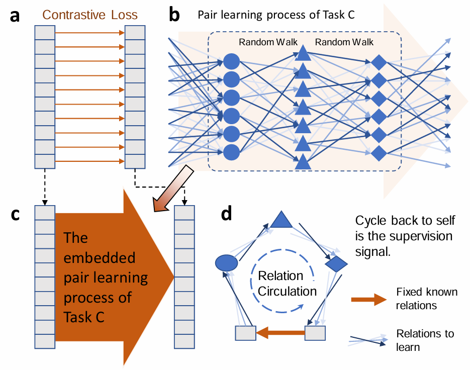

|
Zhenyu Wei | 卫振宇 I am a fourth-year undergraduate student majoring in Computer Science at Shanghai Jiao Tong University. Currently, I am fortune to be a research assistant at National University of Singapore advised by Prof. Lin Shao. Previously, I was an intern at Shanghai Jiao Tong University MVIG advised by Prof. Cewu Lu.
×

|

|
ResearchMy research interests lie in 🤖robot learning and 🦾dexterous manipulation. My long-term goal is to make robots an indispensable part of our lives, transforming the way we live. I'm open to collaborations on robotics related projects! If you are a researcher looking for a partner, feel free to contact me🤟. |

|
$\mathcal{D(R,O)}$ Grasp: A Unified Representation of Robot and Object Interaction for Cross-Embodiment Dexterous Grasping
In submission to ICRA 2025 Website / arXiv / Code We introduce a novel representation, $\mathcal{D(R,O)}$ for dexterous grasping tasks. This interaction-centric formulation transcends conventional robot-centric and object-centric paradigms, facilitating robust generalization across diverse robotic hands and objects. |
|  |
Auto-Pairing Positives through Implicit Relation Circulation for Discriminative Self-Learning
In submission to TPAMI arXiv We present Implicit Relation Circulation (IRC), a self-supervised learning framework that uses random walks across feature groups without explicit matching. By connecting it to a simpler task, cycle consistency facilitates the automatic discovery of positive pairs. |
Experience |

|
National University of Singapore, Singapore 2024.06 - nowResearch AssistantAdvisor: Prof. Lin Shao |

|
SJTU Machine Vision and Intelligence Group (MVIG), China 2022.10 - 2024.05Research InternAdvisor: Prof. Cewu Lu |
|
|
Shanghai Jiao Tong University, China 2021.09 - 2025.06Undergraduate Student |
|
Fell free to contact me if you have any problem.
|